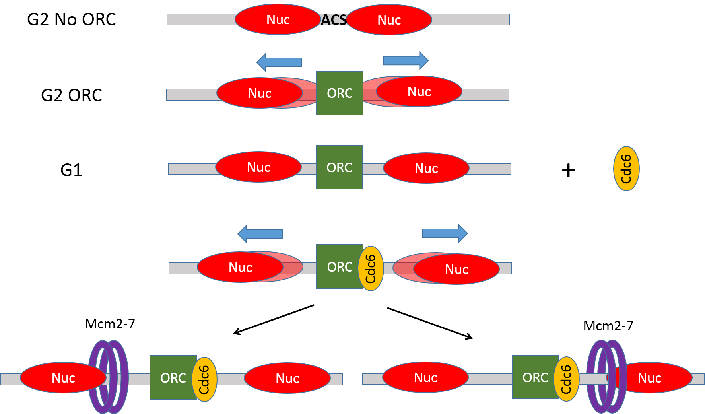
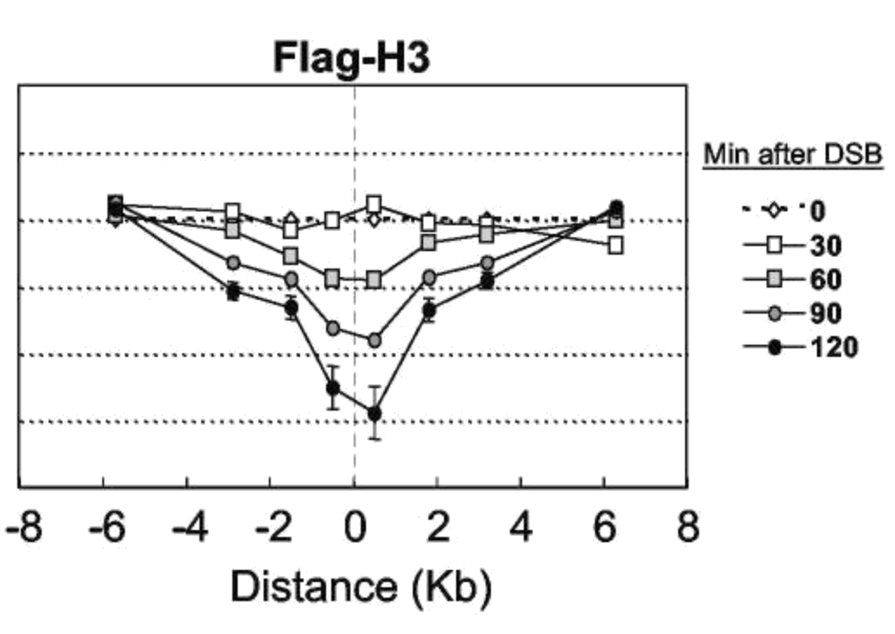
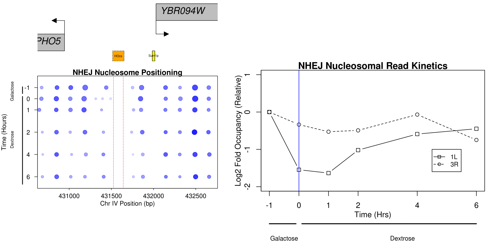

Disruption and repair of chromatin at a site-specifc DSB
Department of Pharmacology and Cancer Biology
Duke University School of Medicine
Kunkel 2019
Collaboration
Teaching
Chromatin remodeling at replication origins
Belsky et al., Genes & Development, 2015
Chromatin assembly at the replication fork

Gutiérrez et al., Genome Research, 2019
Vinay's DSB

Vinay Tripuraneni, MSTP
Vinay's DSB

Vinay Tripuraneni, MSTP
Broad nucleosome eviction surrounding a DSB
Tsukuda et al., Nature 2005
Introduction of a site-specific break at PHO5
Introduction of a site-specific break at PHO5

Introduction of a site-specific break at PHO5

MRE11 -dependent broad eviction of nucleosomes

Chromatin occupancy profiling

Chromatin occupancy profiling

Chromatin changes at control loci

Chromatin flanking a DSB break at PHO5

Chromatin flanking a DSB break at PHO5

Chromatin flanking a DSB break at PHO5

Histone eviction surrounding a break at PHO5

Histone eviction surrounding a break at PHO5

Histone eviction surrounding a break at PHO5

Histone eviction summary

Histone eviction summary

MRE11 facilitates eviction of the 1L nucleosome

Restoration of chromatin following NHEJ?

Restoration of chromatin following NHEJ?

Chromatin dynamics during NHEJ
Chromatin dynamics during NHEJ
Replication independent restoration of chromatin following NHEJ

Acknowledgements
| MacAlpine Lab | Collaborators |
|---|---|
| Mónica Gutiérrez | Jim Haber (Brandeis) |
| Heather MacAlpine | Thanks! |
| Yulong Li | Sue Jinks-Robertson |
| Vinay Tripuraneni | Mike Resnick |
| Rachel Hoffman | Tom Petes |
| Funding | |
| NIH/NIGMS |